Texto extraído da edição fornecida, sem atualização normativa. Consulte a página original para conferir tabelas, formulários e instruções ilustradas. A numeração dos links corresponde à página do arquivo PDF.
Apresentação
PDF · p. 1JORNADA DE TRABALHO REDUZIDA COM REMUNERAÇÃO PROPORCIONAL
DAP-06.010
Legislação
PDF · p. 2Medida Provisória nº 2.174-28, de 24
de agosto de 2001, publicada no
DOU nº 163-A-E, de 25 de agosto de
2001 (artigos 5º ao 7º).
(reedição da MP 1.917/99)
1. Legislação Básica
É dever do servidor, da Organização Militar (OM) e da Região Militar (RM)
ler e acompanhar a atualização da legislação que se refere aos assuntos
tratados neste Caderno de Orientação.
Referência de legislação:
2
Ver página original — tabelas, imagens e diagramas
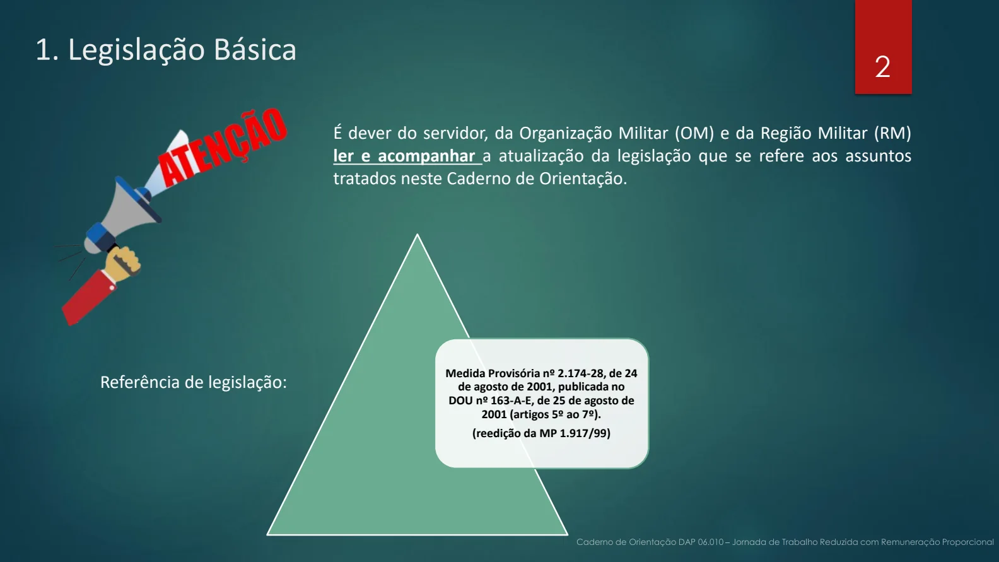
Conceitos
PDF · p. 332. Conceitos
É a redução de jornada de trabalho de oito horas diárias e quarenta horas
semanais para seis ou quatro horas diárias e trinta ou vinte horas semanais,
respectivamente, com remuneração proporcional, calculada sobre a
totalidade da remuneração
.
Ver página original — tabelas, imagens e diagramas
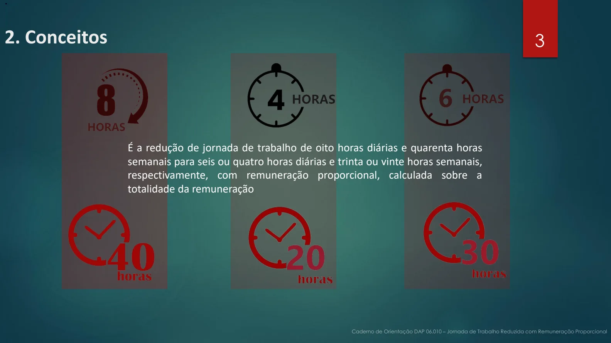
Requisitos e informações gerais
PDF · p. 43. REQUISITOS BÁSICOS 4. INFORMAÇÕES GERAIS
Observado o interesse da administração, a jornada reduzida com remuneração proporcional poderá ser
concedida a critério do Comandante do Exército, vedada a delegação de competência.
O ato de concessão deverá conter:
• dados funcionais do servidor;
• a data do início da redução da jornada, mediante publicação em boletim interno.
O servidor que requerer a jornada de trabalho reduzida deverá permanecer submetido à jornada a que
esteja sujeito até a data de início fixada no ato de concessão.
A jornada de trabalho reduzida com remuneração proporcional NÃO poderá ser concedida aos
servidores:
1. sujeitos à jornada de trabalho estabelecida em leis especiais;
2. ocupantes de cargo efetivo submetido à dedicação exclusiva;
3. em estágio probatório;
4. que tenham cumprido todos os requisitos legais para aposentadoria;
5. que estejam há, no máximo, cinco anos de adquirir o direito à aposentadoria pela integralidade
(inciso XV da Portaria SGP/SEDGG/ME nº 10.360, de 6 de dezembro de 2022);
6. que estejam afastados em virtude de licença por acidente em serviço ou para tratamento de saúde,
quando acometidos das doenças especificadas no § 1º do art. 186 da Lei nº 8.112, de 1990; e
7. não estejam em exercício, em virtude do impedimento de que trata o inciso I do art. 229 da lei nº
8.112, de 11 de dezembro de 1990, salvo quando a decisão criminal transitada em julgado não
determinar a perda do cargo.
.
Ver página original — tabelas, imagens e diagramas
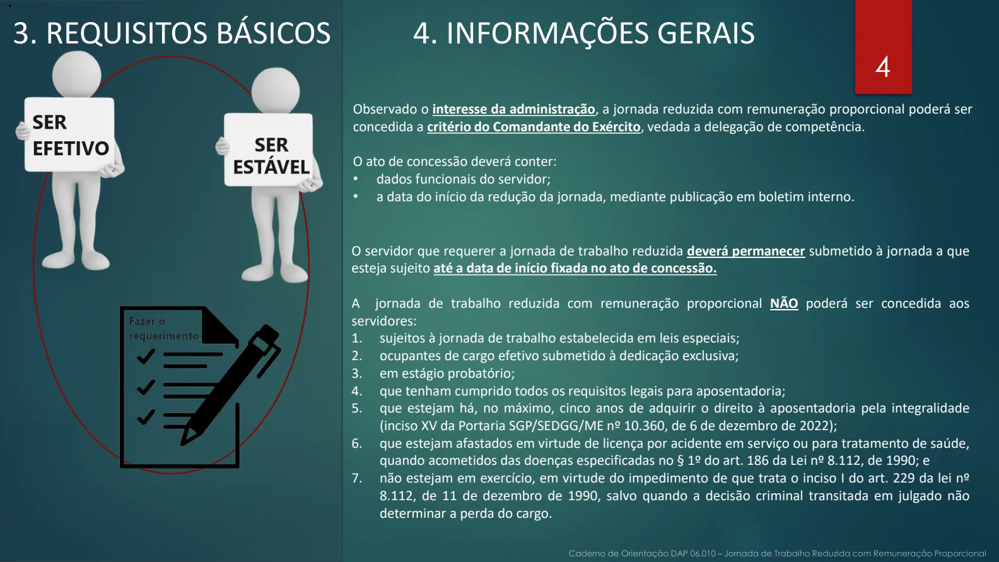
Requisitos e informações gerais
PDF · p. 54. INFORMAÇÕES GERAIS (cont.)
A redução da jornada não implica perda de vantagens permanentes inerentes ao cargo efetivo ocupado, ainda que concedidas em virtude
de leis que estabeleçam o cumprimento de quarenta horas semanais, hipóteses em que serão pagas com a redução proporcional à
jornada de trabalho reduzida.
A jornada reduzida poderá ser revertida em integral, a qualquer tempo, de ofício ou a pedido do servidor, de acordo com o juízo de
conveniência e oportunidade da administração.
O servidor poderá, durante o período em que estiver submetido à jornada reduzida, exercer o comércio e participar de gerência,
administração ou de conselhos fiscal ou de administração de sociedades mercantis ou civis, desde que haja compatibilidade de horário
com o exercício do cargo,
EXCEÇÃO: O servidor que requerer a redução de jornada com remuneração proporcional e acumule cargo de
Professor com um dos cargos relacionados nos incisos I a VI e no § 2º do art. 3o da Medida Provisória nº 2.174-
28, de 24 de agosto de 2001, NÃO poderá exercer o comércio e participar de gerência, administração ou de
conselhos fiscal ou de administração de sociedades mercantis ou civis
Aos servidores com jornada reduzida aplicam-se as disposições contidas no art. 117 da Lei nº 8.112, de 1990, à
exceção da proibição de participar de gerência ou administração de sociedade privada, personificada ou não
personificada, exercer o comércio, exceto na qualidade de acionista, cotista ou comanditário
Ver página original — tabelas, imagens e diagramas
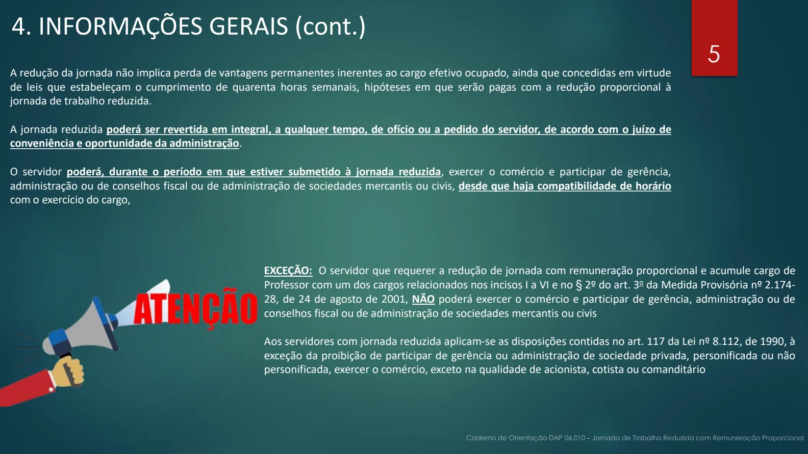
Documentos necessários
PDF · p. 665. DOCUMENTOS NECESSÁRIOS
DOCUMENTO ONDE ENCONTRAR
MODELO?
RESPONSÁVEL PELA
ELABORAÇÃO/EMISSÃO/
FORNECIMENTO
Requerimento SPED Servidor interessado
Informação SPED OM
5.1. REDIGINDO OS DOCUMENTOS NO SPED (Requerimento e Informação)
1
2
4
5
Requerimento Informação
3
6
Ver página original — tabelas, imagens e diagramas
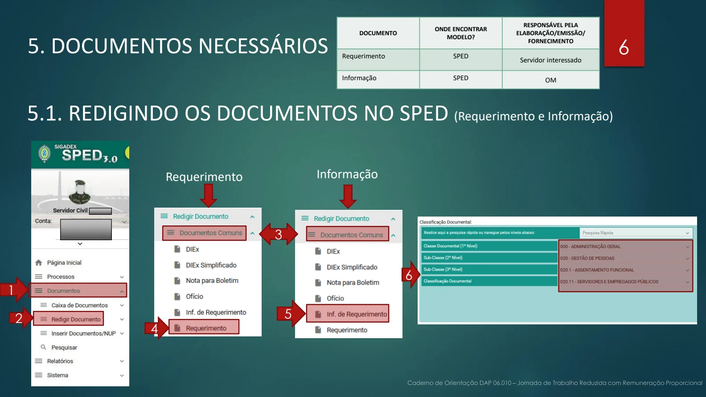
Tramitação
PDF · p. 7SERVIDOR
• Fazer o
requerimento e
instruir o
processo com
destino à OM
OM
• Receber o
requerimento,
elaborar a
informação do
requerimento,
organizar o
processo e
enviar o
processo à RM.
RM
• Conferir o
processo e
encaminhá-lo
para a
DAP/SPC.
DAP/SPC
• Analisar o
processo.
• No caso de
deferimento,
elaborar a
minuta da
portaria
• Encaminhar o
processo ao
Gab Cmt Ex
• Informar a OM
sobre a
publicação da
decisão
GAB CMT EX
• Deferir a
redução da
jornada de
trabalho
• No caso de
deferimento,
publicar no
Boletim do
Exército, via
Secretaria Geral
do Exército
(SGE)
• Arquivar o
processo
OM
• Acompanhar a
publicação no
Boletim do
Exército.
• Implantar a nova
jornada no
SIAPE, conforme
Anexo
(PROCEDIMENTOS
PARA ALTERAÇÃO DA
JORNADA DE TRABALHO
DE SERVIDOR CIVIL DO
ÓRGÃO DE ORIGEM)
6. TRAMITAÇÃO
Informação
Deferido
SIAPE
Ver página original — tabelas, imagens e diagramas
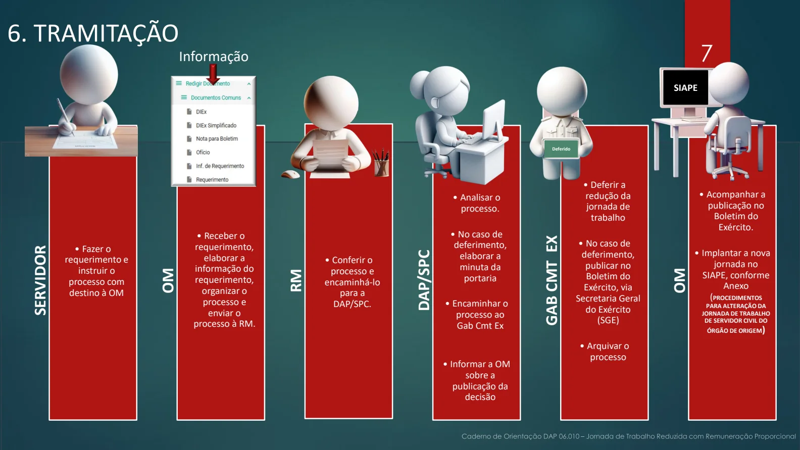
Fontes e elaboração
PDF · p. 8ELABORAÇÃO:
ASSESSORIA TÉCNICA DA SPC/DAP
SUBSEÇÃO DE BENEFÍCIOS DA SPC/DAP
JANEIRO DE 2024
Para conhecer melhor o assunto, leia as
legislações indicadas no início deste caderno, disponíveis no link:
https://legis.sigepe.gov.br/legis/pesquisa-avancada
Ver página original — tabelas, imagens e diagramas
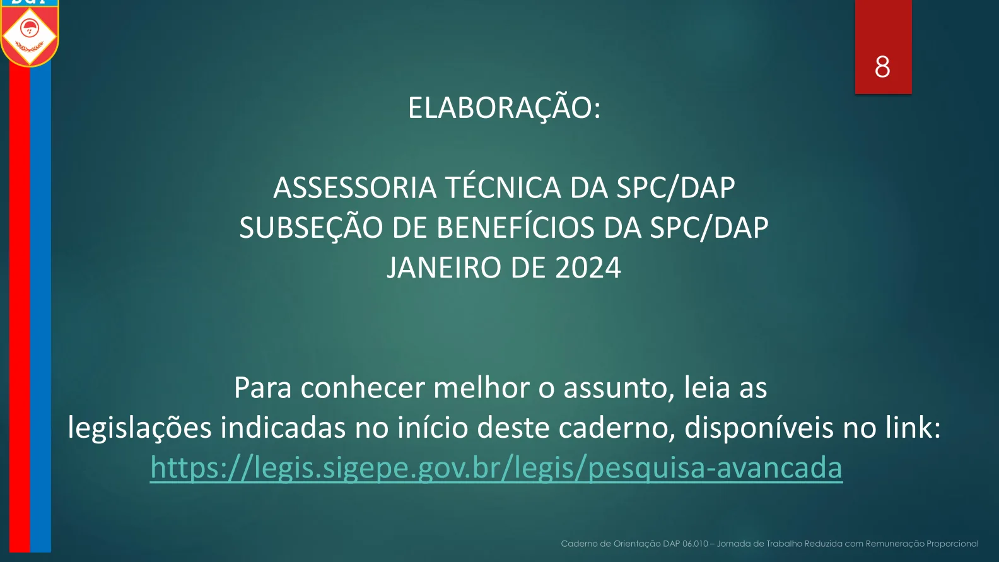
Como alterar a jornada no Siapenet
PDF · p. 9ANEXO
PROCEDIMENTOS PARA ALTERAÇÃO DA JORNADA DE TRABALHO DE
SERVIDOR CIVIL DO ÓRGÃO DE ORIGEM
ACESSO PARA OS SISTEMAS:
✓ É necessário que o operador tenha acesso aos sistemas SIAPE e SIGEPE para operacionalizar os
sistemas apresentados neste tutorial.
✓ Segue abaixo o passo a passo para alterar a jornada de trabalho do (a) servidor (a):
1º Passo (entrar no sistema SIAPENET):
➢ Clicar na opção “Órgão”
2º Passo (acessar com o certificado digital):
➢ O operador deverá acessar o portal por meio de certificado digital.
Ver página original — tabelas, imagens e diagramas
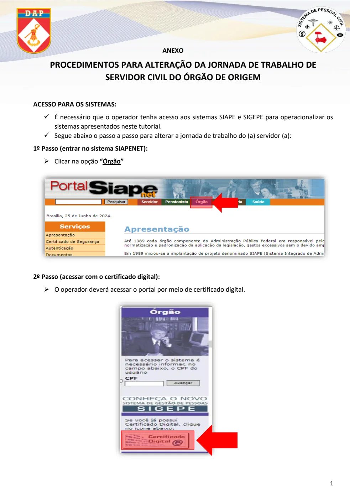
Como alterar a jornada no Siapenet
PDF · p. 103º Passo (página inicial do SIAPENET):
➢ Para acessar a “Tela Preta”, acessar o ícone “Acesso SIAPE”.
4º Passo (acesso à tela de comandos):
➢ Para realizar a alteração de jornada de trabalho na tela de COMANDO, digitar a transação:
“> CAALJORPCA” e, depois, teclar “ENTER”:
Ver página original — tabelas, imagens e diagramas
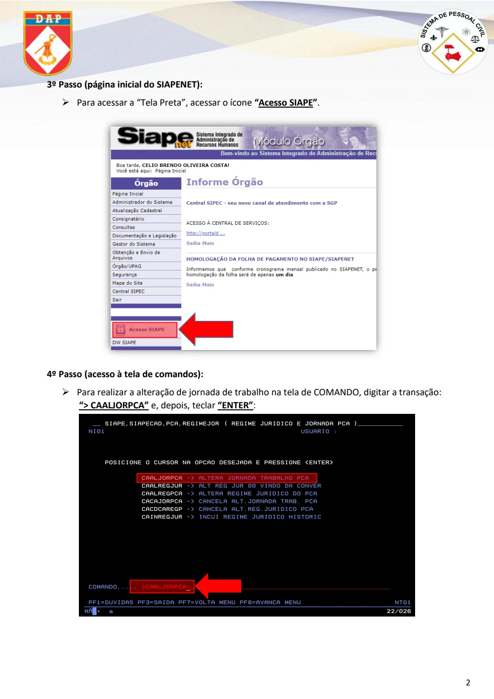
Como alterar a jornada no Siapenet
PDF · p. 115º Passo:
➢ Digitar a matrícula SIAPECAD do (a) servidor (a) ou clicar na tecla “F1” para outras formas de
pesquisa.
6º Passo:
➢ Digitar a matrícula ou o CPF ou o nome do (a) servidor (a) e “ENTER”.
➢ Selecionar com um “X” no espaço correspondente ao nome do servidor e teclar “ENTER”.
7º Passo:
➢ O operador será redirecionado para a tela anterior, e deve clicar no botão “ENTER” para
prosseguir.
0505000
0505000
João Maurício
Porto Velho
0505000
0505000
Ver página original — tabelas, imagens e diagramas
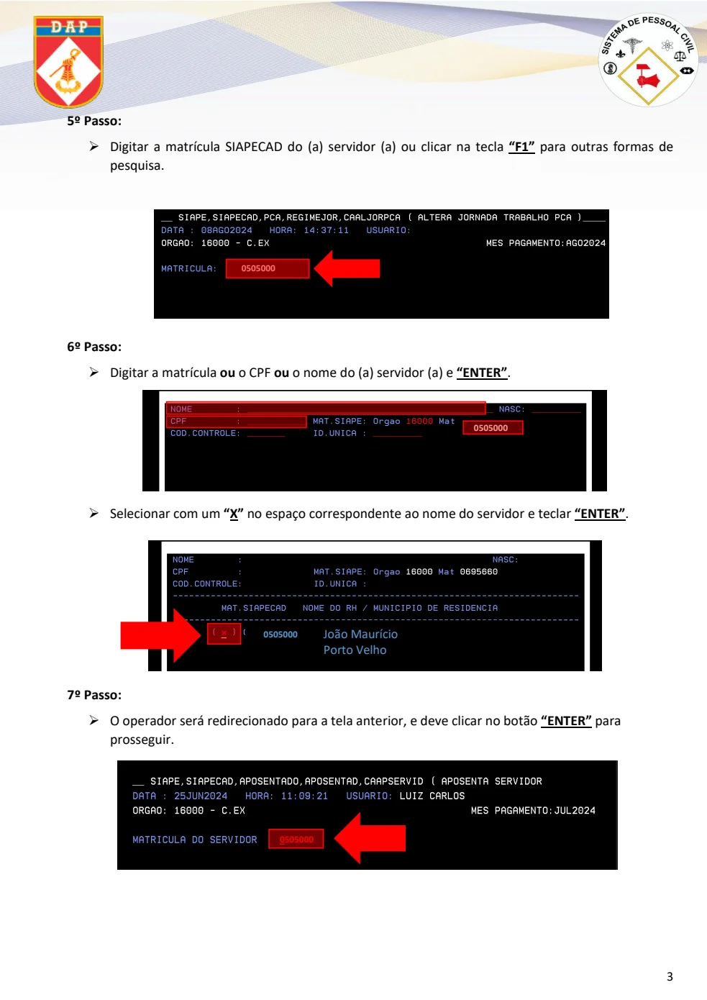
Como alterar a jornada no Siapenet
PDF · p. 128º Passo (ponto inicial para alteração):
➢ Nessa tela, o operador deve selecionar o cargo que deseja ser alterado, conforme o processo do
servidor. Depois, teclar “ENTER”.
9º Passo (incluir jornada)
➢ Inserir a nova jornada de trabalho (1) e a data fim da jornada anterior (2). Teclar “ENTER” e
será apresentada a tela de continuação para prosseguir com a alteração.
X
0505000 João Maurício
1
2
Ver página original — tabelas, imagens e diagramas
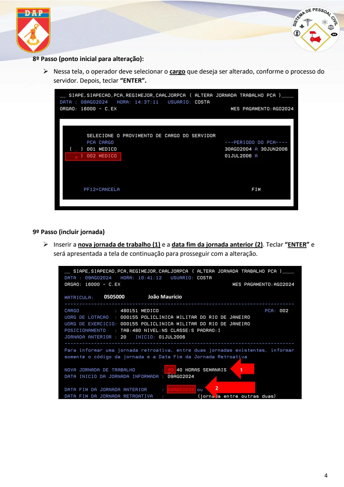
Como alterar a jornada no Siapenet
PDF · p. 1310º Passo (confirmação da jornada):
➢ Para finalizar, o operador deve confirmar os dados incluídos com a opção “S”. Teclar “ENTER” e,
desta forma, será alterada a jornada de trabalho do servidor.
TAREFA CONCLUÍDA!
ELABORAÇÃO E AGRADECIMENTOS:
SUBSEÇÃO DE BENEFÍCIOS/SPC/DAP
APOIO DE CONTEÚDO E FORMATAÇÃO: SUBSEÇÃO DE CADASTRO
E ASSESSORIA TÉCNICA/SPC/DAP
OUTUBRO DE 2024
1ª Edição
0505000 João Maurício
S
Aqui poderão surgir informações sobre férias, cargos comissionados, funções e outras.
Ver página original — tabelas, imagens e diagramas
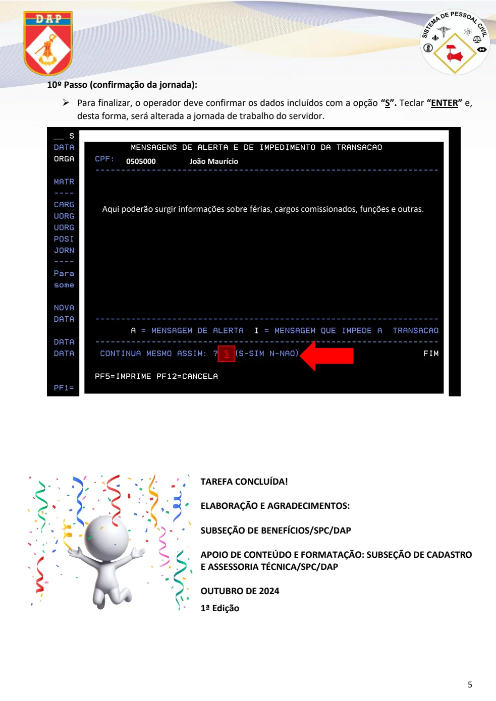